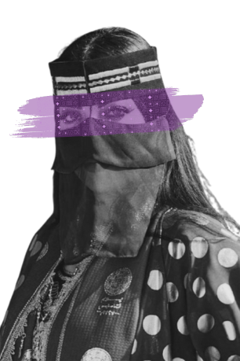
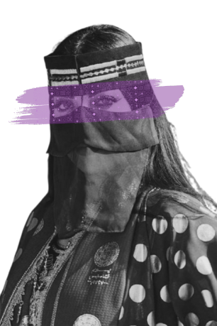

يوم التأسيس هو مشروع وطني طموح، يعيد ربط الناس بجذورهم
الوطنية،
ويلهم خيالهم عبر رحلة تاريخية تعكس مزيجا من
.الثقافة، ولحمة وطنية لشعب يمتلك ذاته وعمق انتمائه
وسعيا لإبراز القيمة الكبيرة لثلاثة قرون من التاريخ
الأصيل، ارتكزت
استراتيجية المملكة العربية السعودية
وخادم الحرمين الشريفين
-الملك سلمان بن عبد
العزيز -حفظه الله- على وصل الماضي بالحاضر عبر رحلة يوم
التأسيس،
التي تسعى إلى إيصال رسائلها بروح معاصرة
ونظرة مغايرة، من خلال حملة تجسد رؤية جديدة
ومميزة،
وتسلط الضوء على تنوع الثقافة السعودية، التي
ترعرعت في ظل دولة أسسها الإمام محمد بن
.سعود -رحمه الله- عام 1727 م